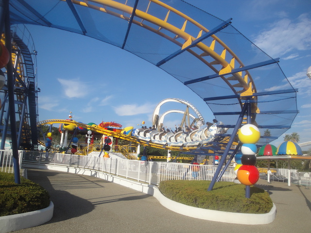
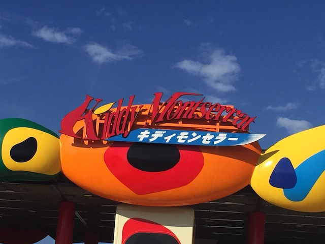

| |
.
Kiddy Montserrat Review

We're here at Parque Espana. For their kiddy coaster, they have Kiddy Montserrat. And much like Parque Espana and all their rides, this is...an interesting kiddy coaster. It's pretty lame. Even by kiddy coasters. But it definetly is unique. Hop in the cars, and....whoa! This ride actually has roomy cars. Most kiddy coasters have really cramped cars because....they're meant for children. But we fit quite comfortably in these cars. So that's a nice upside. Then the ride begins. Around a turn, and up a tiny lifthill. We immidietly reach the top, and then head down a curved drop. Meh. A little kiddy drop. Honestly, the view you get of Pyrenees is more exciting than the actual ride. Go up a small ramp hill, and then down another curved drop. I know we're going down, but it barely feels like it. Go around a turn, and then into a downward helix. Wee. I guess. And into the brake run. Layout wise, this is a really bad and boring kiddy coaster. But....the sheer fact that I don't feel cramped on the ride makes it....tolerable.
2/10
Location: Parque Espana
Opened: 2016
Built by: Hoei Sangyo
Last Ridden: October 30, 2018
Kiddy Montserrat Photos

Home
|